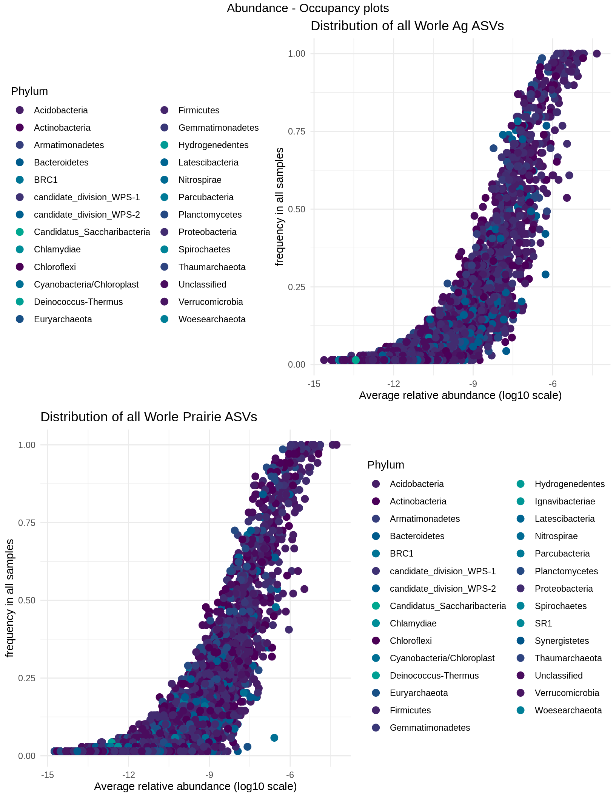

Strips soil core bacterial taxa
Jared Flater
Spring 2020
Core taxa
The ASVs that are both highly abundant and occupy the most samples are considered the core taxa, we can plot an abunance occupancy plot to get an idea.
# Load the r data structure of the merged STRIPs 16s count data
physeq <- readRDS("data/merged_STRIPs.RDS")
physeq <- physeq %>%
filter_taxa(function(x) sum(x) >= 1, T)Table of the WORLE and Armstrong soil samples
kable(data.frame(sample_data(physeq), row.names = NULL)) %>%
kable_styling(bootstrap_options = "striped") %>%
scroll_box(width = "100%", height = "600px")| unique_id | experiment | matrix | treatment | plot | sample_day | depth | in_plot_location | block | strip | manure_treatment | soil_type |
|---|---|---|---|---|---|---|---|---|---|---|---|
| P1-s1-d1-b | Worle_Rainfall | soil | no_manure_strip | 1 | Baseline | 1 | s1 | 1 | Y | N | crop |
| P1-s1-d1-t0 | Worle_Rainfall | soil | no_manure_strip | 1 | T000 | 1 | s1 | 1 | Y | N | crop |
| P1-s1-d1-t14 | Worle_Rainfall | soil | no_manure_strip | 1 | T014 | 1 | s1 | 1 | Y | N | crop |
| P1-s1-d1-t2 | Worle_Rainfall | soil | no_manure_strip | 1 | T002 | 1 | s1 | 1 | Y | N | crop |
| P1-s1-d2-t2 | Worle_Rainfall | soil | no_manure_strip | 1 | T002 | 2 | s1 | 1 | Y | N | crop |
| P1-s1-d1-t21 | Worle_Rainfall | soil | no_manure_strip | 1 | T021 | 1 | s1 | 1 | Y | N | crop |
| P1-s1-d1-t42 | Worle_Rainfall | soil | no_manure_strip | 1 | T042 | 1 | s1 | 1 | Y | N | crop |
| P1-s1-d2-b | Worle_Rainfall | soil | no_manure_strip | 1 | Baseline | 2 | s1 | 1 | Y | N | crop |
| P1-s1-d2-t0 | Worle_Rainfall | soil | no_manure_strip | 1 | T000 | 2 | s1 | 1 | Y | N | crop |
| P1-s1-d2-t14 | Worle_Rainfall | soil | no_manure_strip | 1 | T014 | 2 | s1 | 1 | Y | N | crop |
| P1-s1-d2-t21 | Worle_Rainfall | soil | no_manure_strip | 1 | T021 | 2 | s1 | 1 | Y | N | crop |
| P1-s1-d2-t42 | Worle_Rainfall | soil | no_manure_strip | 1 | T042 | 2 | s1 | 1 | Y | N | crop |
| P1-s2-d1-b | Worle_Rainfall | soil | no_manure_strip | 1 | Baseline | 1 | s2 | 1 | Y | N | crop |
| P1-s2-d1-t0 | Worle_Rainfall | soil | no_manure_strip | 1 | T000 | 1 | s2 | 1 | Y | N | crop |
| P1-s2-d1-t14 | Worle_Rainfall | soil | no_manure_strip | 1 | T014 | 1 | s2 | 1 | Y | N | crop |
| P1-s2-d1-t2 | Worle_Rainfall | soil | no_manure_strip | 1 | T002 | 1 | s2 | 1 | Y | N | crop |
| P1-s2-d2-t2 | Worle_Rainfall | soil | no_manure_strip | 1 | T002 | 2 | s2 | 1 | Y | N | crop |
| P1-s2-d1-t21 | Worle_Rainfall | soil | no_manure_strip | 1 | T021 | 1 | s2 | 1 | Y | N | crop |
| P1-s2-d2-b | Worle_Rainfall | soil | no_manure_strip | 1 | Baseline | 2 | s2 | 1 | Y | N | crop |
| P1-s2-d2-t0 | Worle_Rainfall | soil | no_manure_strip | 1 | T000 | 2 | s2 | 1 | Y | N | crop |
| P1-s2-d2-t14 | Worle_Rainfall | soil | no_manure_strip | 1 | T014 | 2 | s2 | 1 | Y | N | crop |
| P1-s2-d2-t21 | Worle_Rainfall | soil | no_manure_strip | 1 | T021 | 2 | s2 | 1 | Y | N | crop |
| P1-s2-d2-t42 | Worle_Rainfall | soil | no_manure_strip | 1 | T042 | 2 | s2 | 1 | Y | N | crop |
| P1-s3-d1-b | Worle_Rainfall | soil | no_manure_strip | 1 | Baseline | 1 | s3 | 1 | Y | N | crop |
| P1-s3-d1-t0 | Worle_Rainfall | soil | no_manure_strip | 1 | T000 | 1 | s3 | 1 | Y | N | crop |
| P1-s3-d1-t14 | Worle_Rainfall | soil | no_manure_strip | 1 | T014 | 1 | s3 | 1 | Y | N | crop |
| P1-s3-d1-t2 | Worle_Rainfall | soil | no_manure_strip | 1 | T002 | 1 | s3 | 1 | Y | N | crop |
| P1-s3-d2-t2 | Worle_Rainfall | soil | no_manure_strip | 1 | T002 | 2 | s3 | 1 | Y | N | crop |
| P1-s3-d1-t21 | Worle_Rainfall | soil | no_manure_strip | 1 | T021 | 1 | s3 | 1 | Y | N | crop |
| P1-s3-d1-t42 | Worle_Rainfall | soil | no_manure_strip | 1 | T042 | 1 | s3 | 1 | Y | N | crop |
| P1-s3-d2-b | Worle_Rainfall | soil | no_manure_strip | 1 | Baseline | 2 | s3 | 1 | Y | N | crop |
| P1-s3-d2-t0 | Worle_Rainfall | soil | no_manure_strip | 1 | T000 | 2 | s3 | 1 | Y | N | crop |
| P1-s3-d2-t14 | Worle_Rainfall | soil | no_manure_strip | 1 | T014 | 2 | s3 | 1 | Y | N | crop |
| P1-s3-d2-t21 | Worle_Rainfall | soil | no_manure_strip | 1 | T021 | 2 | s3 | 1 | Y | N | crop |
| P1-s3-d2-t42 | Worle_Rainfall | soil | no_manure_strip | 1 | T042 | 2 | s3 | 1 | Y | N | crop |
| P1-s4-d1-b | Worle_Rainfall | soil | no_manure_strip | 1 | Baseline | 1 | s4 | 1 | Y | N | crop |
| P1-s4-d1-t0 | Worle_Rainfall | soil | no_manure_strip | 1 | T000 | 1 | s4 | 1 | Y | N | crop |
| P1-s4-d1-t14 | Worle_Rainfall | soil | no_manure_strip | 1 | T014 | 1 | s4 | 1 | Y | N | crop |
| P1-s4-d1-t2 | Worle_Rainfall | soil | no_manure_strip | 1 | T002 | 1 | s4 | 1 | Y | N | crop |
| P1-s4-d2-t2 | Worle_Rainfall | soil | no_manure_strip | 1 | T002 | 2 | s4 | 1 | Y | N | crop |
| P1-s4-d1-t21 | Worle_Rainfall | soil | no_manure_strip | 1 | T021 | 1 | s4 | 1 | Y | N | crop |
| P1-s4-d1-t42 | Worle_Rainfall | soil | no_manure_strip | 1 | T042 | 1 | s4 | 1 | Y | N | crop |
| P1-s4-d2-b | Worle_Rainfall | soil | no_manure_strip | 1 | Baseline | 2 | s4 | 1 | Y | N | crop |
| P1-s4-d2-t0 | Worle_Rainfall | soil | no_manure_strip | 1 | T000 | 2 | s4 | 1 | Y | N | crop |
| P1-s4-d2-t14 | Worle_Rainfall | soil | no_manure_strip | 1 | T014 | 2 | s4 | 1 | Y | N | crop |
| P1-s4-d2-t21 | Worle_Rainfall | soil | no_manure_strip | 1 | T021 | 2 | s4 | 1 | Y | N | crop |
| P1-s4-d2-t42 | Worle_Rainfall | soil | no_manure_strip | 1 | T042 | 2 | s4 | 1 | Y | N | crop |
| P1-s5-d1-b | Worle_Rainfall | soil | no_manure_strip | 1 | Baseline | 1 | s5 | 1 | Y | N | border |
| P1-s5-d1-t0 | Worle_Rainfall | soil | no_manure_strip | 1 | T000 | 1 | s5 | 1 | Y | N | border |
| P1-s5-d1-t14 | Worle_Rainfall | soil | no_manure_strip | 1 | T014 | 1 | s5 | 1 | Y | N | border |
| P1-s5-d1-t2 | Worle_Rainfall | soil | no_manure_strip | 1 | T002 | 1 | s5 | 1 | Y | N | border |
| P1-s5-d1-t21 | Worle_Rainfall | soil | no_manure_strip | 1 | T021 | 1 | s5 | 1 | Y | N | border |
| P1-s5-d1-t42 | Worle_Rainfall | soil | no_manure_strip | 1 | T042 | 1 | s5 | 1 | Y | N | border |
| P1-s5-d2-b | Worle_Rainfall | soil | no_manure_strip | 1 | Baseline | 2 | s5 | 1 | Y | N | border |
| P1-s5-d2-t0 | Worle_Rainfall | soil | no_manure_strip | 1 | T000 | 2 | s5 | 1 | Y | N | border |
| P1-s5-d2-t14 | Worle_Rainfall | soil | no_manure_strip | 1 | T014 | 2 | s5 | 1 | Y | N | border |
| P1-s5-d2-t2 | Worle_Rainfall | soil | no_manure_strip | 1 | T002 | 2 | s5 | 1 | Y | N | border |
| P1-s5-d2-t21 | Worle_Rainfall | soil | no_manure_strip | 1 | T021 | 2 | s5 | 1 | Y | N | border |
| P1-s5-d2-t42 | Worle_Rainfall | soil | no_manure_strip | 1 | T042 | 2 | s5 | 1 | Y | N | border |
| P1-s6-d1-b | Worle_Rainfall | soil | no_manure_strip | 1 | Baseline | 1 | s6 | 1 | Y | N | strip |
| P1-s6-d1-t0 | Worle_Rainfall | soil | no_manure_strip | 1 | T000 | 1 | s6 | 1 | Y | N | strip |
| P1-s6-d1-t14 | Worle_Rainfall | soil | no_manure_strip | 1 | T014 | 1 | s6 | 1 | Y | N | strip |
| P1-s6-d1-t2 | Worle_Rainfall | soil | no_manure_strip | 1 | T002 | 1 | s6 | 1 | Y | N | strip |
| P1-s6-d1-t21 | Worle_Rainfall | soil | no_manure_strip | 1 | T021 | 1 | s6 | 1 | Y | N | strip |
| P1-s6-d1-t42 | Worle_Rainfall | soil | no_manure_strip | 1 | T042 | 1 | s6 | 1 | Y | N | strip |
| P1-s6-d2-b | Worle_Rainfall | soil | no_manure_strip | 1 | Baseline | 2 | s6 | 1 | Y | N | strip |
| P1-s6-d2-t0 | Worle_Rainfall | soil | no_manure_strip | 1 | T000 | 2 | s6 | 1 | Y | N | strip |
| P1-s6-d2-t14 | Worle_Rainfall | soil | no_manure_strip | 1 | T014 | 2 | s6 | 1 | Y | N | strip |
| P1-s6-d2-t2 | Worle_Rainfall | soil | no_manure_strip | 1 | T002 | 2 | s6 | 1 | Y | N | strip |
| P1-s6-d2-t21 | Worle_Rainfall | soil | no_manure_strip | 1 | T021 | 2 | s6 | 1 | Y | N | strip |
| P1-s6-d2-t42 | Worle_Rainfall | soil | no_manure_strip | 1 | T042 | 2 | s6 | 1 | Y | N | strip |
| P1-s7-d1-b | Worle_Rainfall | soil | no_manure_strip | 1 | Baseline | 1 | s7 | 1 | Y | N | strip |
| P1-s7-d1-t0 | Worle_Rainfall | soil | no_manure_strip | 1 | T000 | 1 | s7 | 1 | Y | N | strip |
| P1-s7-d1-t14 | Worle_Rainfall | soil | no_manure_strip | 1 | T014 | 1 | s7 | 1 | Y | N | strip |
| P1-s7-d1-t2 | Worle_Rainfall | soil | no_manure_strip | 1 | T002 | 1 | s7 | 1 | Y | N | strip |
| P1-s7-d1-t42 | Worle_Rainfall | soil | no_manure_strip | 1 | T042 | 1 | s7 | 1 | Y | N | strip |
| P1-s7-d2-b | Worle_Rainfall | soil | no_manure_strip | 1 | Baseline | 2 | s7 | 1 | Y | N | strip |
| P1-s7-d2-t0 | Worle_Rainfall | soil | no_manure_strip | 1 | T000 | 2 | s7 | 1 | Y | N | strip |
| P1-s7-d2-t14 | Worle_Rainfall | soil | no_manure_strip | 1 | T014 | 2 | s7 | 1 | Y | N | strip |
| P1-s7-d2-t2 | Worle_Rainfall | soil | no_manure_strip | 1 | T002 | 2 | s7 | 1 | Y | N | strip |
| P1-s7-d2-t21 | Worle_Rainfall | soil | no_manure_strip | 1 | T021 | 2 | s7 | 1 | Y | N | strip |
| P1-s7-d2-t42 | Worle_Rainfall | soil | no_manure_strip | 1 | T042 | 2 | s7 | 1 | Y | N | strip |
| P1-s8-d1-b | Worle_Rainfall | soil | no_manure_strip | 1 | Baseline | 1 | s8 | 1 | Y | N | strip |
| P1-s8-d1-t0 | Worle_Rainfall | soil | no_manure_strip | 1 | T000 | 1 | s8 | 1 | Y | N | strip |
| P1-s8-d1-t14 | Worle_Rainfall | soil | no_manure_strip | 1 | T014 | 1 | s8 | 1 | Y | N | strip |
| P1-s8-d1-t2 | Worle_Rainfall | soil | no_manure_strip | 1 | T002 | 1 | s8 | 1 | Y | N | strip |
| P1-s8-d1-t21 | Worle_Rainfall | soil | no_manure_strip | 1 | T021 | 1 | s8 | 1 | Y | N | strip |
| P1-s8-d1-t42 | Worle_Rainfall | soil | no_manure_strip | 1 | T042 | 1 | s8 | 1 | Y | N | strip |
| P1-s8-d2-b | Worle_Rainfall | soil | no_manure_strip | 1 | Baseline | 2 | s8 | 1 | Y | N | strip |
| P1-s8-d2-t0 | Worle_Rainfall | soil | no_manure_strip | 1 | T000 | 2 | s8 | 1 | Y | N | strip |
| P1-s8-d2-t14 | Worle_Rainfall | soil | no_manure_strip | 1 | T014 | 2 | s8 | 1 | Y | N | strip |
| P1-s8-d2-t2 | Worle_Rainfall | soil | no_manure_strip | 1 | T002 | 2 | s8 | 1 | Y | N | strip |
| P1-s8-d2-t21 | Worle_Rainfall | soil | no_manure_strip | 1 | T021 | 2 | s8 | 1 | Y | N | strip |
| P1-s8-d2-t42 | Worle_Rainfall | soil | no_manure_strip | 1 | T042 | 2 | s8 | 1 | Y | N | strip |
| P1-s9-d1-b | Worle_Rainfall | soil | no_manure_strip | 1 | Baseline | 1 | s9 | 1 | Y | N | strip |
| P1-s9-d1-t0 | Worle_Rainfall | soil | no_manure_strip | 1 | T000 | 1 | s9 | 1 | Y | N | strip |
| P1-s9-d1-t14 | Worle_Rainfall | soil | no_manure_strip | 1 | T014 | 1 | s9 | 1 | Y | N | strip |
| P1-s9-d1-t2 | Worle_Rainfall | soil | no_manure_strip | 1 | T002 | 1 | s9 | 1 | Y | N | strip |
| P1-s9-d1-t21 | Worle_Rainfall | soil | no_manure_strip | 1 | T021 | 1 | s9 | 1 | Y | N | strip |
| P1-s9-d1-t42 | Worle_Rainfall | soil | no_manure_strip | 1 | T042 | 1 | s9 | 1 | Y | N | strip |
| P1-s9-d2-b | Worle_Rainfall | soil | no_manure_strip | 1 | Baseline | 2 | s9 | 1 | Y | N | strip |
| P1-s9-d2-t0 | Worle_Rainfall | soil | no_manure_strip | 1 | T000 | 2 | s9 | 1 | Y | N | strip |
| P1-s9-d2-t14 | Worle_Rainfall | soil | no_manure_strip | 1 | T014 | 2 | s9 | 1 | Y | N | strip |
| P1-s9-d2-t2 | Worle_Rainfall | soil | no_manure_strip | 1 | T002 | 2 | s9 | 1 | Y | N | strip |
| P1-s9-d2-t21 | Worle_Rainfall | soil | no_manure_strip | 1 | T021 | 2 | s9 | 1 | Y | N | strip |
| P1-s9-d2-t42 | Worle_Rainfall | soil | no_manure_strip | 1 | T042 | 2 | s9 | 1 | Y | N | strip |
| P2-s1-d1-b | Worle_Rainfall | soil | no_manure_strip | 2 | Baseline | 1 | s1 | 2 | Y | N | crop |
| P2-s1-d1-t0 | Worle_Rainfall | soil | no_manure_strip | 2 | T000 | 1 | s1 | 2 | Y | N | crop |
| P2-s1-d1-t14 | Worle_Rainfall | soil | no_manure_strip | 2 | T014 | 1 | s1 | 2 | Y | N | crop |
| P2-s1-d1-t2 | Worle_Rainfall | soil | no_manure_strip | 2 | T002 | 1 | s1 | 2 | Y | N | crop |
| P2-s1-d1-t21 | Worle_Rainfall | soil | no_manure_strip | 2 | T021 | 1 | s1 | 2 | Y | N | crop |
| P2-s1-d1-t42 | Worle_Rainfall | soil | no_manure_strip | 2 | T042 | 1 | s1 | 2 | Y | N | crop |
| P2-s1-d2-b | Worle_Rainfall | soil | no_manure_strip | 2 | Baseline | 2 | s1 | 2 | Y | N | crop |
| P2-s1-d2-t0 | Worle_Rainfall | soil | no_manure_strip | 2 | T000 | 2 | s1 | 2 | Y | N | crop |
| P2-s1-d2-t14 | Worle_Rainfall | soil | no_manure_strip | 2 | T014 | 2 | s1 | 2 | Y | N | crop |
| P2-s1-d2-t2 | Worle_Rainfall | soil | no_manure_strip | 2 | T002 | 2 | s1 | 2 | Y | N | crop |
| P2-s1-d2-t21 | Worle_Rainfall | soil | no_manure_strip | 2 | T021 | 2 | s1 | 2 | Y | N | crop |
| P2-s1-d2-t42 | Worle_Rainfall | soil | no_manure_strip | 2 | T042 | 2 | s1 | 2 | Y | N | crop |
| P2-s2-d1-b | Worle_Rainfall | soil | no_manure_strip | 2 | Baseline | 1 | s2 | 2 | Y | N | crop |
| P2-s2-d1-t0 | Worle_Rainfall | soil | no_manure_strip | 2 | T000 | 1 | s2 | 2 | Y | N | crop |
| P2-s2-d1-t14 | Worle_Rainfall | soil | no_manure_strip | 2 | T014 | 1 | s2 | 2 | Y | N | crop |
| P2-s2-d1-t2 | Worle_Rainfall | soil | no_manure_strip | 2 | T002 | 1 | s2 | 2 | Y | N | crop |
| P2-s2-d1-t21 | Worle_Rainfall | soil | no_manure_strip | 2 | T021 | 1 | s2 | 2 | Y | N | crop |
| P2-s2-d1-t42 | Worle_Rainfall | soil | no_manure_strip | 2 | T042 | 1 | s2 | 2 | Y | N | crop |
| P2-s2-d2-b | Worle_Rainfall | soil | no_manure_strip | 2 | Baseline | 2 | s2 | 2 | Y | N | crop |
| P2-s2-d2-t0 | Worle_Rainfall | soil | no_manure_strip | 2 | T000 | 2 | s2 | 2 | Y | N | crop |
| P2-s2-d2-t14 | Worle_Rainfall | soil | no_manure_strip | 2 | T014 | 2 | s2 | 2 | Y | N | crop |
| P2-s2-d2-t2 | Worle_Rainfall | soil | no_manure_strip | 2 | T002 | 2 | s2 | 2 | Y | N | crop |
| P2-s2-d2-t21 | Worle_Rainfall | soil | no_manure_strip | 2 | T021 | 2 | s2 | 2 | Y | N | crop |
| P2-s2-d2-t42 | Worle_Rainfall | soil | no_manure_strip | 2 | T042 | 2 | s2 | 2 | Y | N | crop |
| P2-s3-d1-b | Worle_Rainfall | soil | no_manure_strip | 2 | Baseline | 1 | s3 | 2 | Y | N | crop |
| P2-s3-d1-t0 | Worle_Rainfall | soil | no_manure_strip | 2 | T000 | 1 | s3 | 2 | Y | N | crop |
| P2-s3-d1-t14 | Worle_Rainfall | soil | no_manure_strip | 2 | T014 | 1 | s3 | 2 | Y | N | crop |
| P2-s3-d1-t2 | Worle_Rainfall | soil | no_manure_strip | 2 | T002 | 1 | s3 | 2 | Y | N | crop |
| P2-s3-d1-t21 | Worle_Rainfall | soil | no_manure_strip | 2 | T021 | 1 | s3 | 2 | Y | N | crop |
| P2-s3-d2-b | Worle_Rainfall | soil | no_manure_strip | 2 | Baseline | 2 | s3 | 2 | Y | N | crop |
| P2-s3-d2-t0 | Worle_Rainfall | soil | no_manure_strip | 2 | T000 | 2 | s3 | 2 | Y | N | crop |
| P2-s3-d2-t14 | Worle_Rainfall | soil | no_manure_strip | 2 | T014 | 2 | s3 | 2 | Y | N | crop |
| P2-s3-d2-t2 | Worle_Rainfall | soil | no_manure_strip | 2 | T002 | 2 | s3 | 2 | Y | N | crop |
| P2-s3-d2-t21 | Worle_Rainfall | soil | no_manure_strip | 2 | T021 | 2 | s3 | 2 | Y | N | crop |
| P2-s3-d2-t42 | Worle_Rainfall | soil | no_manure_strip | 2 | T042 | 2 | s3 | 2 | Y | N | crop |
| P2-s4-d1-b | Worle_Rainfall | soil | no_manure_strip | 2 | Baseline | 1 | s4 | 2 | Y | N | crop |
| P2-s4-d1-t0 | Worle_Rainfall | soil | no_manure_strip | 2 | T000 | 1 | s4 | 2 | Y | N | crop |
| P2-s4-d1-t14 | Worle_Rainfall | soil | no_manure_strip | 2 | T014 | 1 | s4 | 2 | Y | N | crop |
| P2-s4-d1-t2 | Worle_Rainfall | soil | no_manure_strip | 2 | T002 | 1 | s4 | 2 | Y | N | crop |
| P2-s4-d1-t21 | Worle_Rainfall | soil | no_manure_strip | 2 | T021 | 1 | s4 | 2 | Y | N | crop |
| P2-s4-d1-t42 | Worle_Rainfall | soil | no_manure_strip | 2 | T042 | 1 | s4 | 2 | Y | N | crop |
| P2-s4-d2-b | Worle_Rainfall | soil | no_manure_strip | 2 | Baseline | 2 | s4 | 2 | Y | N | crop |
| P2-s4-d2-t0 | Worle_Rainfall | soil | no_manure_strip | 2 | T000 | 2 | s4 | 2 | Y | N | crop |
| P2-s4-d2-t14 | Worle_Rainfall | soil | no_manure_strip | 2 | T014 | 2 | s4 | 2 | Y | N | crop |
| P2-s4-d2-t2 | Worle_Rainfall | soil | no_manure_strip | 2 | T002 | 2 | s4 | 2 | Y | N | crop |
| P2-s4-d2-t21 | Worle_Rainfall | soil | no_manure_strip | 2 | T021 | 2 | s4 | 2 | Y | N | crop |
| P2-s4-d2-t42 | Worle_Rainfall | soil | no_manure_strip | 2 | T042 | 2 | s4 | 2 | Y | N | crop |
| P2-s5-d1-b | Worle_Rainfall | soil | no_manure_strip | 2 | Baseline | 1 | s5 | 2 | Y | N | border |
| P2-s5-d1-t0 | Worle_Rainfall | soil | no_manure_strip | 2 | T000 | 1 | s5 | 2 | Y | N | border |
| P2-s5-d1-t14 | Worle_Rainfall | soil | no_manure_strip | 2 | T014 | 1 | s5 | 2 | Y | N | border |
| P2-s5-d1-t2 | Worle_Rainfall | soil | no_manure_strip | 2 | T002 | 1 | s5 | 2 | Y | N | border |
| P2-s5-d1-t21 | Worle_Rainfall | soil | no_manure_strip | 2 | T021 | 1 | s5 | 2 | Y | N | border |
| P2-s5-d1-t42 | Worle_Rainfall | soil | no_manure_strip | 2 | T042 | 1 | s5 | 2 | Y | N | border |
| P2-s5-d2-b | Worle_Rainfall | soil | no_manure_strip | 2 | Baseline | 2 | s5 | 2 | Y | N | border |
| P2-s5-d2-t0 | Worle_Rainfall | soil | no_manure_strip | 2 | T000 | 2 | s5 | 2 | Y | N | border |
| P2-s5-d2-t14 | Worle_Rainfall | soil | no_manure_strip | 2 | T014 | 2 | s5 | 2 | Y | N | border |
| P2-s5-d2-t2 | Worle_Rainfall | soil | no_manure_strip | 2 | T002 | 2 | s5 | 2 | Y | N | border |
| P2-s5-d2-t21 | Worle_Rainfall | soil | no_manure_strip | 2 | T021 | 2 | s5 | 2 | Y | N | border |
| P2-s5-d2-t42 | Worle_Rainfall | soil | no_manure_strip | 2 | T042 | 2 | s5 | 2 | Y | N | border |
| P2-s6-d1-b | Worle_Rainfall | soil | no_manure_strip | 2 | Baseline | 1 | s6 | 2 | Y | N | strip |
| P2-s6-d1-t0 | Worle_Rainfall | soil | no_manure_strip | 2 | T000 | 1 | s6 | 2 | Y | N | strip |
| P2-s6-d1-t14 | Worle_Rainfall | soil | no_manure_strip | 2 | T014 | 1 | s6 | 2 | Y | N | strip |
| P2-s6-d1-t2 | Worle_Rainfall | soil | no_manure_strip | 2 | T002 | 1 | s6 | 2 | Y | N | strip |
| P2-s6-d1-t21 | Worle_Rainfall | soil | no_manure_strip | 2 | T021 | 1 | s6 | 2 | Y | N | strip |
| P2-s6-d1-t42 | Worle_Rainfall | soil | no_manure_strip | 2 | T042 | 1 | s6 | 2 | Y | N | strip |
| P2-s6-d2-b | Worle_Rainfall | soil | no_manure_strip | 2 | Baseline | 2 | s6 | 2 | Y | N | strip |
| P2-s6-d2-t0 | Worle_Rainfall | soil | no_manure_strip | 2 | T000 | 2 | s6 | 2 | Y | N | strip |
| P2-s6-d2-t14 | Worle_Rainfall | soil | no_manure_strip | 2 | T014 | 2 | s6 | 2 | Y | N | strip |
| P2-s6-d2-t2 | Worle_Rainfall | soil | no_manure_strip | 2 | T002 | 2 | s6 | 2 | Y | N | strip |
| P2-s6-d2-t21 | Worle_Rainfall | soil | no_manure_strip | 2 | T021 | 2 | s6 | 2 | Y | N | strip |
| P2-s6-d2-t42 | Worle_Rainfall | soil | no_manure_strip | 2 | T042 | 2 | s6 | 2 | Y | N | strip |
| P2-s7-d1-b | Worle_Rainfall | soil | no_manure_strip | 2 | Baseline | 1 | s7 | 2 | Y | N | strip |
| P2-s7-d1-t0 | Worle_Rainfall | soil | no_manure_strip | 2 | T000 | 1 | s7 | 2 | Y | N | strip |
| P2-s7-d1-t14 | Worle_Rainfall | soil | no_manure_strip | 2 | T014 | 1 | s7 | 2 | Y | N | strip |
| P2-s7-d1-t2 | Worle_Rainfall | soil | no_manure_strip | 2 | T002 | 1 | s7 | 2 | Y | N | strip |
| P2-s7-d1-t21 | Worle_Rainfall | soil | no_manure_strip | 2 | T021 | 1 | s7 | 2 | Y | N | strip |
| P2-s7-d1-t42 | Worle_Rainfall | soil | no_manure_strip | 2 | T042 | 1 | s7 | 2 | Y | N | strip |
| P2-s7-d2-b | Worle_Rainfall | soil | no_manure_strip | 2 | Baseline | 2 | s7 | 2 | Y | N | strip |
| P2-s7-d2-t0 | Worle_Rainfall | soil | no_manure_strip | 2 | T000 | 2 | s7 | 2 | Y | N | strip |
| P2-s7-d2-t14 | Worle_Rainfall | soil | no_manure_strip | 2 | T014 | 2 | s7 | 2 | Y | N | strip |
| P2-s7-d2-t2 | Worle_Rainfall | soil | no_manure_strip | 2 | T002 | 2 | s7 | 2 | Y | N | strip |
| P2-s7-d2-t21 | Worle_Rainfall | soil | no_manure_strip | 2 | T021 | 2 | s7 | 2 | Y | N | strip |
| P2-s7-d2-t42 | Worle_Rainfall | soil | no_manure_strip | 2 | T042 | 2 | s7 | 2 | Y | N | strip |
| P2-s8-d1-b | Worle_Rainfall | soil | no_manure_strip | 2 | Baseline | 1 | s8 | 2 | Y | N | strip |
| P2-s8-d1-t0 | Worle_Rainfall | soil | no_manure_strip | 2 | T000 | 1 | s8 | 2 | Y | N | strip |
| P2-s8-d1-t14 | Worle_Rainfall | soil | no_manure_strip | 2 | T014 | 1 | s8 | 2 | Y | N | strip |
| P2-s8-d1-t2 | Worle_Rainfall | soil | no_manure_strip | 2 | T002 | 1 | s8 | 2 | Y | N | strip |
| P2-s8-d1-t21 | Worle_Rainfall | soil | no_manure_strip | 2 | T021 | 1 | s8 | 2 | Y | N | strip |
| P2-s8-d1-t42 | Worle_Rainfall | soil | no_manure_strip | 2 | T042 | 1 | s8 | 2 | Y | N | strip |
| P2-s8-d2-b | Worle_Rainfall | soil | no_manure_strip | 2 | Baseline | 2 | s8 | 2 | Y | N | strip |
| P2-s8-d2-t0 | Worle_Rainfall | soil | no_manure_strip | 2 | T000 | 2 | s8 | 2 | Y | N | strip |
| P2-s8-d2-t14 | Worle_Rainfall | soil | no_manure_strip | 2 | T014 | 2 | s8 | 2 | Y | N | strip |
| P2-s8-d2-t2 | Worle_Rainfall | soil | no_manure_strip | 2 | T002 | 2 | s8 | 2 | Y | N | strip |
| P2-s8-d2-t21 | Worle_Rainfall | soil | no_manure_strip | 2 | T021 | 2 | s8 | 2 | Y | N | strip |
| P2-s8-d2-t42 | Worle_Rainfall | soil | no_manure_strip | 2 | T042 | 2 | s8 | 2 | Y | N | strip |
| P2-s9-d1-b | Worle_Rainfall | soil | no_manure_strip | 2 | Baseline | 1 | s9 | 2 | Y | N | strip |
| P2-s9-d1-t0 | Worle_Rainfall | soil | no_manure_strip | 2 | T000 | 1 | s9 | 2 | Y | N | strip |
| P2-s9-d1-t14 | Worle_Rainfall | soil | no_manure_strip | 2 | T014 | 1 | s9 | 2 | Y | N | strip |
| P2-s9-d1-t2 | Worle_Rainfall | soil | no_manure_strip | 2 | T002 | 1 | s9 | 2 | Y | N | strip |
| P2-s9-d1-t21 | Worle_Rainfall | soil | no_manure_strip | 2 | T021 | 1 | s9 | 2 | Y | N | strip |
| P2-s9-d2-b | Worle_Rainfall | soil | no_manure_strip | 2 | Baseline | 2 | s9 | 2 | Y | N | strip |
| P2-s9-d2-t0 | Worle_Rainfall | soil | no_manure_strip | 2 | T000 | 2 | s9 | 2 | Y | N | strip |
| P2-s9-d2-t14 | Worle_Rainfall | soil | no_manure_strip | 2 | T014 | 2 | s9 | 2 | Y | N | strip |
| P2-s9-d2-t2 | Worle_Rainfall | soil | no_manure_strip | 2 | T002 | 2 | s9 | 2 | Y | N | strip |
| P2-s9-d2-t21 | Worle_Rainfall | soil | no_manure_strip | 2 | T021 | 2 | s9 | 2 | Y | N | strip |
| P2-s9-d2-t42 | Worle_Rainfall | soil | no_manure_strip | 2 | T042 | 2 | s9 | 2 | Y | N | strip |
| P3-s1-d1-b | Worle_Rainfall | soil | no_manure_strip | 3 | Baseline | 1 | s1 | 3 | Y | N | crop |
| P3-s1-d1-t0 | Worle_Rainfall | soil | no_manure_strip | 3 | T000 | 1 | s1 | 3 | Y | N | crop |
| P3-s1-d1-t14 | Worle_Rainfall | soil | no_manure_strip | 3 | T014 | 1 | s1 | 3 | Y | N | crop |
| P3-s1-d1-t21 | Worle_Rainfall | soil | no_manure_strip | 3 | T021 | 1 | s1 | 3 | Y | N | crop |
| P3-s1-d1-t42 | Worle_Rainfall | soil | no_manure_strip | 3 | T042 | 1 | s1 | 3 | Y | N | crop |
| P3-s1-d2-b | Worle_Rainfall | soil | no_manure_strip | 3 | Baseline | 2 | s1 | 3 | Y | N | crop |
| P3-s1-d2-t0 | Worle_Rainfall | soil | no_manure_strip | 3 | T000 | 2 | s1 | 3 | Y | N | crop |
| P3-s1-d2-t14 | Worle_Rainfall | soil | no_manure_strip | 3 | T014 | 2 | s1 | 3 | Y | N | crop |
| P3-s1-d2-t2 | Worle_Rainfall | soil | no_manure_strip | 3 | T002 | 2 | s1 | 3 | Y | N | crop |
| P3-s1-d2-t21 | Worle_Rainfall | soil | no_manure_strip | 3 | T021 | 2 | s1 | 3 | Y | N | crop |
| P3-s1-d2-t42 | Worle_Rainfall | soil | no_manure_strip | 3 | T042 | 2 | s1 | 3 | Y | N | crop |
| P3-s2-d1-b | Worle_Rainfall | soil | no_manure_strip | 3 | Baseline | 1 | s2 | 3 | Y | N | crop |
| P3-s2-d1-t0 | Worle_Rainfall | soil | no_manure_strip | 3 | T000 | 1 | s2 | 3 | Y | N | crop |
| P3-s2-d1-t14 | Worle_Rainfall | soil | no_manure_strip | 3 | T014 | 1 | s2 | 3 | Y | N | crop |
| P3-s2-d1-t2 | Worle_Rainfall | soil | no_manure_strip | 3 | T002 | 1 | s2 | 3 | Y | N | crop |
| P3-s2-d1-t21 | Worle_Rainfall | soil | no_manure_strip | 3 | T021 | 1 | s2 | 3 | Y | N | crop |
| P3-s2-d1-t42 | Worle_Rainfall | soil | no_manure_strip | 3 | T042 | 1 | s2 | 3 | Y | N | crop |
| P3-s2-d2-b | Worle_Rainfall | soil | no_manure_strip | 3 | Baseline | 2 | s2 | 3 | Y | N | crop |
| P3-s2-d2-t0 | Worle_Rainfall | soil | no_manure_strip | 3 | T000 | 2 | s2 | 3 | Y | N | crop |
| P3-s2-d2-t14 | Worle_Rainfall | soil | no_manure_strip | 3 | T014 | 2 | s2 | 3 | Y | N | crop |
| P3-s2-d2-t2 | Worle_Rainfall | soil | no_manure_strip | 3 | T002 | 2 | s2 | 3 | Y | N | crop |
| P3-s2-d2-t21 | Worle_Rainfall | soil | no_manure_strip | 3 | T021 | 2 | s2 | 3 | Y | N | crop |
| P3-s2-d2-t42 | Worle_Rainfall | soil | no_manure_strip | 3 | T042 | 2 | s2 | 3 | Y | N | crop |
| P3-s3-d1-b | Worle_Rainfall | soil | no_manure_strip | 3 | Baseline | 1 | s3 | 3 | Y | N | crop |
| P3-s3-d1-t0 | Worle_Rainfall | soil | no_manure_strip | 3 | T000 | 1 | s3 | 3 | Y | N | crop |
| P3-s3-d1-t14 | Worle_Rainfall | soil | no_manure_strip | 3 | T014 | 1 | s3 | 3 | Y | N | crop |
| P3-s3-d1-t2 | Worle_Rainfall | soil | no_manure_strip | 3 | T002 | 1 | s3 | 3 | Y | N | crop |
| P3-s3-d1-t21 | Worle_Rainfall | soil | no_manure_strip | 3 | T021 | 1 | s3 | 3 | Y | N | crop |
| P3-s3-d1-t42 | Worle_Rainfall | soil | no_manure_strip | 3 | T042 | 1 | s3 | 3 | Y | N | crop |
| P3-s3-d2-b | Worle_Rainfall | soil | no_manure_strip | 3 | Baseline | 2 | s3 | 3 | Y | N | crop |
| P3-s3-d2-t0 | Worle_Rainfall | soil | no_manure_strip | 3 | T000 | 2 | s3 | 3 | Y | N | crop |
| P3-s3-d2-t14 | Worle_Rainfall | soil | no_manure_strip | 3 | T014 | 2 | s3 | 3 | Y | N | crop |
| P3-s3-d2-t2 | Worle_Rainfall | soil | no_manure_strip | 3 | T002 | 2 | s3 | 3 | Y | N | crop |
| P3-s3-d2-t21 | Worle_Rainfall | soil | no_manure_strip | 3 | T021 | 2 | s3 | 3 | Y | N | crop |
| P3-s3-d2-t42 | Worle_Rainfall | soil | no_manure_strip | 3 | T042 | 2 | s3 | 3 | Y | N | crop |
| P3-s4-d1-b | Worle_Rainfall | soil | no_manure_strip | 3 | Baseline | 1 | s4 | 3 | Y | N | crop |
| P3-s4-d1-t0 | Worle_Rainfall | soil | no_manure_strip | 3 | T000 | 1 | s4 | 3 | Y | N | crop |
| P3-s4-d1-t14 | Worle_Rainfall | soil | no_manure_strip | 3 | T014 | 1 | s4 | 3 | Y | N | crop |
| P3-s4-d1-t2 | Worle_Rainfall | soil | no_manure_strip | 3 | T002 | 1 | s4 | 3 | Y | N | crop |
| P3-s4-d1-t21 | Worle_Rainfall | soil | no_manure_strip | 3 | T021 | 1 | s4 | 3 | Y | N | crop |
| P3-s4-d1-t42 | Worle_Rainfall | soil | no_manure_strip | 3 | T042 | 1 | s4 | 3 | Y | N | crop |
| P3-s4-d2-b | Worle_Rainfall | soil | no_manure_strip | 3 | Baseline | 2 | s4 | 3 | Y | N | crop |
| P3-s4-d2-t0 | Worle_Rainfall | soil | no_manure_strip | 3 | T000 | 2 | s4 | 3 | Y | N | crop |
| P3-s4-d2-t14 | Worle_Rainfall | soil | no_manure_strip | 3 | T014 | 2 | s4 | 3 | Y | N | crop |
| P3-s4-d2-t2 | Worle_Rainfall | soil | no_manure_strip | 3 | T002 | 2 | s4 | 3 | Y | N | crop |
| P3-s4-d2-t21 | Worle_Rainfall | soil | no_manure_strip | 3 | T021 | 2 | s4 | 3 | Y | N | crop |
| P3-s4-d2-t42 | Worle_Rainfall | soil | no_manure_strip | 3 | T042 | 2 | s4 | 3 | Y | N | crop |
| P3-s5-d1-b | Worle_Rainfall | soil | no_manure_strip | 3 | Baseline | 1 | s5 | 3 | Y | N | border |
| P3-s5-d1-t0 | Worle_Rainfall | soil | no_manure_strip | 3 | T000 | 1 | s5 | 3 | Y | N | border |
| P3-s5-d1-t14 | Worle_Rainfall | soil | no_manure_strip | 3 | T014 | 1 | s5 | 3 | Y | N | border |
| P3-s5-d1-t2 | Worle_Rainfall | soil | no_manure_strip | 3 | T002 | 1 | s5 | 3 | Y | N | border |
| P3-s5-d1-t21 | Worle_Rainfall | soil | no_manure_strip | 3 | T021 | 1 | s5 | 3 | Y | N | border |
| P3-s5-d1-t42 | Worle_Rainfall | soil | no_manure_strip | 3 | T042 | 1 | s5 | 3 | Y | N | border |
| P3-s5-d2-b | Worle_Rainfall | soil | no_manure_strip | 3 | Baseline | 2 | s5 | 3 | Y | N | border |
| P3-s5-d2-t0 | Worle_Rainfall | soil | no_manure_strip | 3 | T000 | 2 | s5 | 3 | Y | N | border |
| P3-s5-d2-t2 | Worle_Rainfall | soil | no_manure_strip | 3 | T002 | 2 | s5 | 3 | Y | N | border |
| P3-s5-d2-t21 | Worle_Rainfall | soil | no_manure_strip | 3 | T021 | 2 | s5 | 3 | Y | N | border |
| P3-s5-d2-t42 | Worle_Rainfall | soil | no_manure_strip | 3 | T042 | 2 | s5 | 3 | Y | N | border |
| P3-s6-d1-b | Worle_Rainfall | soil | no_manure_strip | 3 | Baseline | 1 | s6 | 3 | Y | N | strip |
| P3-s6-d1-t0 | Worle_Rainfall | soil | no_manure_strip | 3 | T000 | 1 | s6 | 3 | Y | N | strip |
| P3-s6-d1-t14 | Worle_Rainfall | soil | no_manure_strip | 3 | T014 | 1 | s6 | 3 | Y | N | strip |
| P3-s6-d1-t2 | Worle_Rainfall | soil | no_manure_strip | 3 | T002 | 1 | s6 | 3 | Y | N | strip |
| P3-s6-d1-t21 | Worle_Rainfall | soil | no_manure_strip | 3 | T021 | 1 | s6 | 3 | Y | N | strip |
| P3-s6-d1-t42 | Worle_Rainfall | soil | no_manure_strip | 3 | T042 | 1 | s6 | 3 | Y | N | strip |
| P3-s6-d2-b | Worle_Rainfall | soil | no_manure_strip | 3 | Baseline | 2 | s6 | 3 | Y | N | strip |
| P3-s6-d2-t0 | Worle_Rainfall | soil | no_manure_strip | 3 | T000 | 2 | s6 | 3 | Y | N | strip |
| P3-s6-d2-t14 | Worle_Rainfall | soil | no_manure_strip | 3 | T014 | 2 | s6 | 3 | Y | N | strip |
| P3-s6-d2-t2 | Worle_Rainfall | soil | no_manure_strip | 3 | T002 | 2 | s6 | 3 | Y | N | strip |
| P3-s6-d2-t21 | Worle_Rainfall | soil | no_manure_strip | 3 | T021 | 2 | s6 | 3 | Y | N | strip |
| P3-s6-d2-t42 | Worle_Rainfall | soil | no_manure_strip | 3 | T042 | 2 | s6 | 3 | Y | N | strip |
| P3-s7-d1-b | Worle_Rainfall | soil | no_manure_strip | 3 | Baseline | 1 | s7 | 3 | Y | N | strip |
| P3-s7-d1-t0 | Worle_Rainfall | soil | no_manure_strip | 3 | T000 | 1 | s7 | 3 | Y | N | strip |
| P3-s7-d1-t14 | Worle_Rainfall | soil | no_manure_strip | 3 | T014 | 1 | s7 | 3 | Y | N | strip |
| P3-s7-d1-t2 | Worle_Rainfall | soil | no_manure_strip | 3 | T002 | 1 | s7 | 3 | Y | N | strip |
| P3-s7-d1-t21 | Worle_Rainfall | soil | no_manure_strip | 3 | T021 | 1 | s7 | 3 | Y | N | strip |
| P3-s7-d1-t42 | Worle_Rainfall | soil | no_manure_strip | 3 | T042 | 1 | s7 | 3 | Y | N | strip |
| P3-s7-d2-b | Worle_Rainfall | soil | no_manure_strip | 3 | Baseline | 2 | s7 | 3 | Y | N | strip |
| P3-s7-d2-t0 | Worle_Rainfall | soil | no_manure_strip | 3 | T000 | 2 | s7 | 3 | Y | N | strip |
| P3-s7-d2-t14 | Worle_Rainfall | soil | no_manure_strip | 3 | T014 | 2 | s7 | 3 | Y | N | strip |
| P3-s7-d2-t2 | Worle_Rainfall | soil | no_manure_strip | 3 | T002 | 2 | s7 | 3 | Y | N | strip |
| P3-s7-d2-t21 | Worle_Rainfall | soil | no_manure_strip | 3 | T021 | 2 | s7 | 3 | Y | N | strip |
| P3-s7-d2-t42 | Worle_Rainfall | soil | no_manure_strip | 3 | T042 | 2 | s7 | 3 | Y | N | strip |
| P3-s8-d1-b | Worle_Rainfall | soil | no_manure_strip | 3 | Baseline | 1 | s8 | 3 | Y | N | strip |
| P3-s8-d1-t0 | Worle_Rainfall | soil | no_manure_strip | 3 | T000 | 1 | s8 | 3 | Y | N | strip |
| P3-s8-d1-t14 | Worle_Rainfall | soil | no_manure_strip | 3 | T014 | 1 | s8 | 3 | Y | N | strip |
| P3-s8-d1-t2 | Worle_Rainfall | soil | no_manure_strip | 3 | T002 | 1 | s8 | 3 | Y | N | strip |
| P3-s8-d1-t21 | Worle_Rainfall | soil | no_manure_strip | 3 | T021 | 1 | s8 | 3 | Y | N | strip |
| P3-s8-d2-b | Worle_Rainfall | soil | no_manure_strip | 3 | Baseline | 2 | s8 | 3 | Y | N | strip |
| P3-s8-d2-t0 | Worle_Rainfall | soil | no_manure_strip | 3 | T000 | 2 | s8 | 3 | Y | N | strip |
| P3-s8-d2-t14 | Worle_Rainfall | soil | no_manure_strip | 3 | T014 | 2 | s8 | 3 | Y | N | strip |
| P3-s8-d2-t2 | Worle_Rainfall | soil | no_manure_strip | 3 | T002 | 2 | s8 | 3 | Y | N | strip |
| P3-s8-d2-t21 | Worle_Rainfall | soil | no_manure_strip | 3 | T021 | 2 | s8 | 3 | Y | N | strip |
| P3-s8-d2-t42 | Worle_Rainfall | soil | no_manure_strip | 3 | T042 | 2 | s8 | 3 | Y | N | strip |
| P3-s9-d1-b | Worle_Rainfall | soil | no_manure_strip | 3 | Baseline | 1 | s9 | 3 | Y | N | strip |
| P3-s9-d1-t0 | Worle_Rainfall | soil | no_manure_strip | 3 | T000 | 1 | s9 | 3 | Y | N | strip |
| P3-s9-d1-t14 | Worle_Rainfall | soil | no_manure_strip | 3 | T014 | 1 | s9 | 3 | Y | N | strip |
| P3-s9-d1-t2 | Worle_Rainfall | soil | no_manure_strip | 3 | T002 | 1 | s9 | 3 | Y | N | strip |
| P3-s9-d1-t21 | Worle_Rainfall | soil | no_manure_strip | 3 | T021 | 1 | s9 | 3 | Y | N | strip |
| P3-s9-d1-t42 | Worle_Rainfall | soil | no_manure_strip | 3 | T042 | 1 | s9 | 3 | Y | N | strip |
| P3-s9-d2-b | Worle_Rainfall | soil | no_manure_strip | 3 | Baseline | 2 | s9 | 3 | Y | N | strip |
| P3-s9-d2-t0 | Worle_Rainfall | soil | no_manure_strip | 3 | T000 | 2 | s9 | 3 | Y | N | strip |
| P3-s9-d2-t14 | Worle_Rainfall | soil | no_manure_strip | 3 | T014 | 2 | s9 | 3 | Y | N | strip |
| P3-s9-d2-t2 | Worle_Rainfall | soil | no_manure_strip | 3 | T002 | 2 | s9 | 3 | Y | N | strip |
| P3-s9-d2-t21 | Worle_Rainfall | soil | no_manure_strip | 3 | T021 | 2 | s9 | 3 | Y | N | strip |
| P3-s9-d2-t42 | Worle_Rainfall | soil | no_manure_strip | 3 | T042 | 2 | s9 | 3 | Y | N | strip |
| ACS-TB-P1-S1-D1 | Armstrong_Rainfall | soil | no_manure_strip | 1 | Baseline | 1 | s1 | 1 | Y | N | crop |
| ACS-TB-P1-S2-D1 | Armstrong_Rainfall | soil | no_manure_strip | 1 | Baseline | 1 | s2 | 1 | Y | N | crop |
| ACS-TB-P1-S2-D2 | Armstrong_Rainfall | soil | no_manure_strip | 1 | Baseline | 2 | s2 | 1 | Y | N | crop |
| ACS-TB-P1-S3-D1 | Armstrong_Rainfall | soil | no_manure_strip | 1 | Baseline | 1 | s3 | 1 | Y | N | crop |
| ACS-TB-P1-S3-D2 | Armstrong_Rainfall | soil | no_manure_strip | 1 | Baseline | 2 | s3 | 1 | Y | N | crop |
| ACS-TB-P1-S4-D1 | Armstrong_Rainfall | soil | no_manure_strip | 1 | Baseline | 1 | s4 | 1 | Y | N | crop |
| ACS-TB-P1-S4-D2 | Armstrong_Rainfall | soil | no_manure_strip | 1 | Baseline | 2 | s4 | 1 | Y | N | crop |
| ACS-TB-P1-S5-D1 | Armstrong_Rainfall | soil | no_manure_strip | 1 | Baseline | 1 | s5 | 1 | Y | N | border |
| ACS-TB-P1-S5-D2 | Armstrong_Rainfall | soil | no_manure_strip | 1 | Baseline | 2 | s5 | 1 | Y | N | border |
| ACS-TB-P1-S6-D1 | Armstrong_Rainfall | soil | no_manure_strip | 1 | Baseline | 1 | s6 | 1 | Y | N | strip |
| ACS-TB-P1-S6-D2 | Armstrong_Rainfall | soil | no_manure_strip | 1 | Baseline | 2 | s6 | 1 | Y | N | strip |
| ACS-TB-P1-S7-D1 | Armstrong_Rainfall | soil | no_manure_strip | 1 | Baseline | 1 | s7 | 1 | Y | N | strip |
| ACS-TB-P1-S7-D2 | Armstrong_Rainfall | soil | no_manure_strip | 1 | Baseline | 2 | s7 | 1 | Y | N | strip |
| ACS-TB-P1-S8-D1 | Armstrong_Rainfall | soil | no_manure_strip | 1 | Baseline | 1 | s8 | 1 | Y | N | strip |
| ACS-TB-P1-S8-D2 | Armstrong_Rainfall | soil | no_manure_strip | 1 | Baseline | 2 | s8 | 1 | Y | N | strip |
| ACS-TB-P1-S9-D1 | Armstrong_Rainfall | soil | no_manure_strip | 1 | Baseline | 1 | s9 | 1 | Y | N | strip |
| ACS-TB-P1-S9-D2 | Armstrong_Rainfall | soil | no_manure_strip | 1 | Baseline | 2 | s9 | 1 | Y | N | strip |
| ACS-TB-P2-S1-D1 | Armstrong_Rainfall | soil | no_manure_strip | 2 | Baseline | 1 | s1 | 2 | Y | N | crop |
| ACS-TB-P2-S1-D2 | Armstrong_Rainfall | soil | no_manure_strip | 2 | Baseline | 2 | s1 | 2 | Y | N | crop |
| ACS-TB-P2-S2-D1 | Armstrong_Rainfall | soil | no_manure_strip | 2 | Baseline | 1 | s2 | 2 | Y | N | crop |
| ACS-TB-P2-S2-D2 | Armstrong_Rainfall | soil | no_manure_strip | 2 | Baseline | 2 | s2 | 2 | Y | N | crop |
| ACS-TB-P2-S3-D1 | Armstrong_Rainfall | soil | no_manure_strip | 2 | Baseline | 1 | s3 | 2 | Y | N | crop |
| ACS-TB-P2-S3-D2 | Armstrong_Rainfall | soil | no_manure_strip | 2 | Baseline | 2 | s3 | 2 | Y | N | crop |
| ACS-TB-P2-S4-D1 | Armstrong_Rainfall | soil | no_manure_strip | 2 | Baseline | 1 | s4 | 2 | Y | N | crop |
| ACS-TB-P2-S4-D2 | Armstrong_Rainfall | soil | no_manure_strip | 2 | Baseline | 2 | s4 | 2 | Y | N | crop |
| ACS-TB-P2-S5-D1 | Armstrong_Rainfall | soil | no_manure_strip | 2 | Baseline | 1 | s5 | 2 | Y | N | border |
| ACS-TB-P2-S5-D2 | Armstrong_Rainfall | soil | no_manure_strip | 2 | Baseline | 2 | s5 | 2 | Y | N | border |
| ACS-TB-P2-S6-D1 | Armstrong_Rainfall | soil | no_manure_strip | 2 | Baseline | 1 | s6 | 2 | Y | N | strip |
| ACS-TB-P2-S6-D2 | Armstrong_Rainfall | soil | no_manure_strip | 2 | Baseline | 2 | s6 | 2 | Y | N | strip |
| ACS-TB-P2-S7-D1 | Armstrong_Rainfall | soil | no_manure_strip | 2 | Baseline | 1 | s7 | 2 | Y | N | strip |
| ACS-TB-P2-S7-D2 | Armstrong_Rainfall | soil | no_manure_strip | 2 | Baseline | 2 | s7 | 2 | Y | N | strip |
| ACS-TB-P2-S8-D1 | Armstrong_Rainfall | soil | no_manure_strip | 2 | Baseline | 1 | s8 | 2 | Y | N | strip |
| ACS-TB-P2-S8-D2 | Armstrong_Rainfall | soil | no_manure_strip | 2 | Baseline | 2 | s8 | 2 | Y | N | strip |
| ACS-TB-P2-S9-D1 | Armstrong_Rainfall | soil | no_manure_strip | 2 | Baseline | 1 | s9 | 2 | Y | N | strip |
| ACS-TB-P2-S9-D2 | Armstrong_Rainfall | soil | no_manure_strip | 2 | Baseline | 2 | s9 | 2 | Y | N | strip |
| ACS-TB-P3-S1-D1 | Armstrong_Rainfall | soil | no_manure_strip | 3 | Baseline | 1 | s1 | 3 | Y | N | crop |
| ACS-TB-P3-S1-D2 | Armstrong_Rainfall | soil | no_manure_strip | 3 | Baseline | 2 | s1 | 3 | Y | N | crop |
| ACS-TB-P3-S2-D1 | Armstrong_Rainfall | soil | no_manure_strip | 3 | Baseline | 1 | s2 | 3 | Y | N | crop |
| ACS-TB-P3-S2-D2 | Armstrong_Rainfall | soil | no_manure_strip | 3 | Baseline | 2 | s2 | 3 | Y | N | crop |
| ACS-TB-P3-S3-D1 | Armstrong_Rainfall | soil | no_manure_strip | 3 | Baseline | 1 | s3 | 3 | Y | N | crop |
| ACS-TB-P3-S3-D2 | Armstrong_Rainfall | soil | no_manure_strip | 3 | Baseline | 2 | s3 | 3 | Y | N | crop |
| ACS-TB-P3-S4-D1 | Armstrong_Rainfall | soil | no_manure_strip | 3 | Baseline | 1 | s4 | 3 | Y | N | crop |
| ACS-TB-P3-S4-D2 | Armstrong_Rainfall | soil | no_manure_strip | 3 | Baseline | 2 | s4 | 3 | Y | N | crop |
| ACS-TB-P3-S5-D1 | Armstrong_Rainfall | soil | no_manure_strip | 3 | Baseline | 1 | s5 | 3 | Y | N | border |
| ACS-TB-P3-S5-D2 | Armstrong_Rainfall | soil | no_manure_strip | 3 | Baseline | 2 | s5 | 3 | Y | N | border |
| ACS-TB-P3-S6-D1 | Armstrong_Rainfall | soil | no_manure_strip | 3 | Baseline | 1 | s6 | 3 | Y | N | strip |
| ACS-TB-P3-S6-D2 | Armstrong_Rainfall | soil | no_manure_strip | 3 | Baseline | 2 | s6 | 3 | Y | N | strip |
| ACS-TB-P3-S7-D1 | Armstrong_Rainfall | soil | no_manure_strip | 3 | Baseline | 1 | s7 | 3 | Y | N | strip |
| ACS-TB-P3-S7-D2 | Armstrong_Rainfall | soil | no_manure_strip | 3 | Baseline | 2 | s7 | 3 | Y | N | strip |
| ACS-TB-P3-S8-D1 | Armstrong_Rainfall | soil | no_manure_strip | 3 | Baseline | 1 | s8 | 3 | Y | N | strip |
| ACS-TB-P3-S8-D2 | Armstrong_Rainfall | soil | no_manure_strip | 3 | Baseline | 2 | s8 | 3 | Y | N | strip |
| ACS-TB-P3-S9-D1 | Armstrong_Rainfall | soil | no_manure_strip | 3 | Baseline | 1 | s9 | 3 | Y | N | strip |
| ACS-TB-P3-S9-D2 | Armstrong_Rainfall | soil | no_manure_strip | 3 | Baseline | 2 | s9 | 3 | Y | N | strip |
| ACS-T000-P1-S1-D1 | Armstrong_Rainfall | soil | no_manure_strip | 1 | T000 | 1 | s1 | 1 | Y | N | crop |
| ACS-T000-P1-S1-D2 | Armstrong_Rainfall | soil | no_manure_strip | 1 | T000 | 2 | s1 | 1 | Y | N | crop |
| ACS-T000-P1-S2-D1 | Armstrong_Rainfall | soil | no_manure_strip | 1 | T000 | 1 | s2 | 1 | Y | N | crop |
| ACS-T000-P1-S2-D2 | Armstrong_Rainfall | soil | no_manure_strip | 1 | T000 | 2 | s2 | 1 | Y | N | crop |
| ACS-T000-P1-S3-D1 | Armstrong_Rainfall | soil | no_manure_strip | 1 | T000 | 1 | s3 | 1 | Y | N | crop |
| ACS-T000-P1-S3-D2 | Armstrong_Rainfall | soil | no_manure_strip | 1 | T000 | 2 | s3 | 1 | Y | N | crop |
| ACS-T000-P1-S4-D1 | Armstrong_Rainfall | soil | no_manure_strip | 1 | T000 | 1 | s4 | 1 | Y | N | crop |
| ACS-T000-P1-S4-D2 | Armstrong_Rainfall | soil | no_manure_strip | 1 | T000 | 2 | s4 | 1 | Y | N | crop |
| ACS-T000-P1-S5-D1 | Armstrong_Rainfall | soil | no_manure_strip | 1 | T000 | 1 | s5 | 1 | Y | N | border |
| ACS-T000-P1-S5-D2 | Armstrong_Rainfall | soil | no_manure_strip | 1 | T000 | 2 | s5 | 1 | Y | N | border |
| ACS-T000-P1-S6-D1 | Armstrong_Rainfall | soil | no_manure_strip | 1 | T000 | 1 | s6 | 1 | Y | N | strip |
| ACS-T000-P1-S6-D2 | Armstrong_Rainfall | soil | no_manure_strip | 1 | T000 | 2 | s6 | 1 | Y | N | strip |
| ACS-T000-P1-S7-D1 | Armstrong_Rainfall | soil | no_manure_strip | 1 | T000 | 1 | s7 | 1 | Y | N | strip |
| ACS-T000-P1-S7-D2 | Armstrong_Rainfall | soil | no_manure_strip | 1 | T000 | 2 | s7 | 1 | Y | N | strip |
| ACS-T000-P1-S8-D1 | Armstrong_Rainfall | soil | no_manure_strip | 1 | T000 | 1 | s8 | 1 | Y | N | strip |
| ACS-T000-P1-S8-D2 | Armstrong_Rainfall | soil | no_manure_strip | 1 | T000 | 2 | s8 | 1 | Y | N | strip |
| ACS-T000-P1-S9-D1 | Armstrong_Rainfall | soil | no_manure_strip | 1 | T000 | 1 | s9 | 1 | Y | N | strip |
| ACS-T000-P1-S9-D2 | Armstrong_Rainfall | soil | no_manure_strip | 1 | T000 | 2 | s9 | 1 | Y | N | strip |
| ACS-T000-P2-S1-D1 | Armstrong_Rainfall | soil | no_manure_strip | 2 | T000 | 1 | s1 | 2 | Y | N | crop |
| ACS-T000-P2-S1-D2 | Armstrong_Rainfall | soil | no_manure_strip | 2 | T000 | 2 | s1 | 2 | Y | N | crop |
| ACS-T000-P2-S2-D1 | Armstrong_Rainfall | soil | no_manure_strip | 2 | T000 | 1 | s2 | 2 | Y | N | crop |
| ACS-T000-P2-S2-D2 | Armstrong_Rainfall | soil | no_manure_strip | 2 | T000 | 2 | s2 | 2 | Y | N | crop |
| ACS-T000-P2-S3-D1 | Armstrong_Rainfall | soil | no_manure_strip | 2 | T000 | 1 | s3 | 2 | Y | N | crop |
| ACS-T000-P2-S3-D2 | Armstrong_Rainfall | soil | no_manure_strip | 2 | T000 | 2 | s3 | 2 | Y | N | crop |
| ACS-T000-P2-S4-D1 | Armstrong_Rainfall | soil | no_manure_strip | 2 | T000 | 1 | s4 | 2 | Y | N | crop |
| ACS-T000-P2-S4-D2 | Armstrong_Rainfall | soil | no_manure_strip | 2 | T000 | 2 | s4 | 2 | Y | N | crop |
| ACS-T000-P2-S5-D1 | Armstrong_Rainfall | soil | no_manure_strip | 2 | T000 | 1 | s5 | 2 | Y | N | border |
| ACS-T000-P2-S5-D2 | Armstrong_Rainfall | soil | no_manure_strip | 2 | T000 | 2 | s5 | 2 | Y | N | border |
| ACS-T000-P2-S6-D1 | Armstrong_Rainfall | soil | no_manure_strip | 2 | T000 | 1 | s6 | 2 | Y | N | strip |
| ACS-T000-P2-S6-D2 | Armstrong_Rainfall | soil | no_manure_strip | 2 | T000 | 2 | s6 | 2 | Y | N | strip |
| ACS-T000-P2-S7-D1 | Armstrong_Rainfall | soil | no_manure_strip | 2 | T000 | 1 | s7 | 2 | Y | N | strip |
| ACS-T000-P2-S7-D2 | Armstrong_Rainfall | soil | no_manure_strip | 2 | T000 | 2 | s7 | 2 | Y | N | strip |
| ACS-T000-P2-S8-D1 | Armstrong_Rainfall | soil | no_manure_strip | 2 | T000 | 1 | s8 | 2 | Y | N | strip |
| ACS-T000-P2-S8-D2 | Armstrong_Rainfall | soil | no_manure_strip | 2 | T000 | 2 | s8 | 2 | Y | N | strip |
| ACS-T000-P2-S9-D1 | Armstrong_Rainfall | soil | no_manure_strip | 2 | T000 | 1 | s9 | 2 | Y | N | strip |
| ACS-T000-P2-S9-D2 | Armstrong_Rainfall | soil | no_manure_strip | 2 | T000 | 2 | s9 | 2 | Y | N | strip |
| ACS-T000-P3-S1-D1 | Armstrong_Rainfall | soil | no_manure_strip | 3 | T000 | 1 | s1 | 3 | Y | N | crop |
| ACS-T000-P3-S1-D2 | Armstrong_Rainfall | soil | no_manure_strip | 3 | T000 | 2 | s1 | 3 | Y | N | crop |
| ACS-T000-P3-S2-D1 | Armstrong_Rainfall | soil | no_manure_strip | 3 | T000 | 1 | s2 | 3 | Y | N | crop |
| ACS-T000-P3-S2-D2 | Armstrong_Rainfall | soil | no_manure_strip | 3 | T000 | 2 | s2 | 3 | Y | N | crop |
| ACS-T000-P3-S3-D1 | Armstrong_Rainfall | soil | no_manure_strip | 3 | T000 | 1 | s3 | 3 | Y | N | crop |
| ACS-T000-P3-S3-D2 | Armstrong_Rainfall | soil | no_manure_strip | 3 | T000 | 2 | s3 | 3 | Y | N | crop |
| ACS-T000-P3-S4-D1 | Armstrong_Rainfall | soil | no_manure_strip | 3 | T000 | 1 | s4 | 3 | Y | N | crop |
| ACS-T000-P3-S4-D2 | Armstrong_Rainfall | soil | no_manure_strip | 3 | T000 | 2 | s4 | 3 | Y | N | crop |
| ACS-T000-P3-S5-D1 | Armstrong_Rainfall | soil | no_manure_strip | 3 | T000 | 1 | s5 | 3 | Y | N | border |
| ACS-T000-P3-S5-D2 | Armstrong_Rainfall | soil | no_manure_strip | 3 | T000 | 2 | s5 | 3 | Y | N | border |
| ACS-T000-P3-S6-D1 | Armstrong_Rainfall | soil | no_manure_strip | 3 | T000 | 1 | s6 | 3 | Y | N | strip |
| ACS-T000-P3-S6-D2 | Armstrong_Rainfall | soil | no_manure_strip | 3 | T000 | 2 | s6 | 3 | Y | N | strip |
| ACS-T000-P3-S7-D1 | Armstrong_Rainfall | soil | no_manure_strip | 3 | T000 | 1 | s7 | 3 | Y | N | strip |
| ACS-T000-P3-S7-D2 | Armstrong_Rainfall | soil | no_manure_strip | 3 | T000 | 2 | s7 | 3 | Y | N | strip |
| ACS-T000-P3-S8-D1 | Armstrong_Rainfall | soil | no_manure_strip | 3 | T000 | 1 | s8 | 3 | Y | N | strip |
| ACS-T000-P3-S8-D2 | Armstrong_Rainfall | soil | no_manure_strip | 3 | T000 | 2 | s8 | 3 | Y | N | strip |
| ACS-T000-P3-S9-D1 | Armstrong_Rainfall | soil | no_manure_strip | 3 | T000 | 1 | s9 | 3 | Y | N | strip |
| ACS-T000-P3-S9-D2 | Armstrong_Rainfall | soil | no_manure_strip | 3 | T000 | 2 | s9 | 3 | Y | N | strip |
| ACS-T002-P1-S1-D1 | Armstrong_Rainfall | soil | no_manure_strip | 1 | T002 | 1 | s1 | 1 | Y | N | crop |
| ACS-T002-P1-S1-D2 | Armstrong_Rainfall | soil | no_manure_strip | 1 | T002 | 2 | s1 | 1 | Y | N | crop |
| ACS-T002-P1-S2-D1 | Armstrong_Rainfall | soil | no_manure_strip | 1 | T002 | 1 | s2 | 1 | Y | N | crop |
| ACS-T002-P1-S2-D2 | Armstrong_Rainfall | soil | no_manure_strip | 1 | T002 | 2 | s2 | 1 | Y | N | crop |
| ACS-T002-P1-S3-D1 | Armstrong_Rainfall | soil | no_manure_strip | 1 | T002 | 1 | s3 | 1 | Y | N | crop |
| ACS-T002-P1-S3-D2 | Armstrong_Rainfall | soil | no_manure_strip | 1 | T002 | 2 | s3 | 1 | Y | N | crop |
| ACS-T002-P1-S4-D1 | Armstrong_Rainfall | soil | no_manure_strip | 1 | T002 | 1 | s4 | 1 | Y | N | crop |
| ACS-T002-P1-S4-D2 | Armstrong_Rainfall | soil | no_manure_strip | 1 | T002 | 2 | s4 | 1 | Y | N | crop |
| ACS-T002-P1-S5-D1 | Armstrong_Rainfall | soil | no_manure_strip | 1 | T002 | 1 | s5 | 1 | Y | N | border |
| ACS-T002-P1-S5-D2 | Armstrong_Rainfall | soil | no_manure_strip | 1 | T002 | 2 | s5 | 1 | Y | N | border |
| ACS-T002-P1-S6-D1 | Armstrong_Rainfall | soil | no_manure_strip | 1 | T002 | 1 | s6 | 1 | Y | N | strip |
| ACS-T002-P1-S6-D2 | Armstrong_Rainfall | soil | no_manure_strip | 1 | T002 | 2 | s6 | 1 | Y | N | strip |
| ACS-T002-P1-S7-D1 | Armstrong_Rainfall | soil | no_manure_strip | 1 | T002 | 1 | s7 | 1 | Y | N | strip |
| ACS-T002-P1-S7-D2 | Armstrong_Rainfall | soil | no_manure_strip | 1 | T002 | 2 | s7 | 1 | Y | N | strip |
| ACS-T002-P1-S8-D1 | Armstrong_Rainfall | soil | no_manure_strip | 1 | T002 | 1 | s8 | 1 | Y | N | strip |
| ACS-T002-P1-S8-D2 | Armstrong_Rainfall | soil | no_manure_strip | 1 | T002 | 2 | s8 | 1 | Y | N | strip |
| ACS-T002-P1-S9-D1 | Armstrong_Rainfall | soil | no_manure_strip | 1 | T002 | 1 | s9 | 1 | Y | N | strip |
| ACS-T002-P1-S9-D2 | Armstrong_Rainfall | soil | no_manure_strip | 1 | T002 | 2 | s9 | 1 | Y | N | strip |
| ACS-T002-P2-S1-D1 | Armstrong_Rainfall | soil | no_manure_strip | 2 | T002 | 1 | s1 | 2 | Y | N | crop |
| ACS-T002-P2-S1-D2 | Armstrong_Rainfall | soil | no_manure_strip | 2 | T002 | 2 | s1 | 2 | Y | N | crop |
| ACS-T002-P2-S2-D1 | Armstrong_Rainfall | soil | no_manure_strip | 2 | T002 | 1 | s2 | 2 | Y | N | crop |
| ACS-T002-P2-S2-D2 | Armstrong_Rainfall | soil | no_manure_strip | 2 | T002 | 2 | s2 | 2 | Y | N | crop |
| ACS-T002-P2-S3-D1 | Armstrong_Rainfall | soil | no_manure_strip | 2 | T002 | 1 | s3 | 2 | Y | N | crop |
| ACS-T002-P2-S3-D2 | Armstrong_Rainfall | soil | no_manure_strip | 2 | T002 | 2 | s3 | 2 | Y | N | crop |
| ACS-T002-P2-S4-D1 | Armstrong_Rainfall | soil | no_manure_strip | 2 | T002 | 1 | s4 | 2 | Y | N | crop |
| ACS-T002-P2-S4-D2 | Armstrong_Rainfall | soil | no_manure_strip | 2 | T002 | 2 | s4 | 2 | Y | N | crop |
| ACS-T002-P2-S5-D1 | Armstrong_Rainfall | soil | no_manure_strip | 2 | T002 | 1 | s5 | 2 | Y | N | border |
| ACS-T002-P2-S5-D2 | Armstrong_Rainfall | soil | no_manure_strip | 2 | T002 | 2 | s5 | 2 | Y | N | border |
| ACS-T002-P2-S6-D1 | Armstrong_Rainfall | soil | no_manure_strip | 2 | T002 | 1 | s6 | 2 | Y | N | strip |
| ACS-T002-P2-S6-D2 | Armstrong_Rainfall | soil | no_manure_strip | 2 | T002 | 2 | s6 | 2 | Y | N | strip |
| ACS-T002-P2-S7-D1 | Armstrong_Rainfall | soil | no_manure_strip | 2 | T002 | 1 | s7 | 2 | Y | N | strip |
| ACS-T002-P2-S7-D2 | Armstrong_Rainfall | soil | no_manure_strip | 2 | T002 | 2 | s7 | 2 | Y | N | strip |
| ACS-T002-P2-S8-D1 | Armstrong_Rainfall | soil | no_manure_strip | 2 | T002 | 1 | s8 | 2 | Y | N | strip |
| ACS-T002-P2-S8-D2 | Armstrong_Rainfall | soil | no_manure_strip | 2 | T002 | 2 | s8 | 2 | Y | N | strip |
| ACS-T002-P2-S9-D1 | Armstrong_Rainfall | soil | no_manure_strip | 2 | T002 | 1 | s9 | 2 | Y | N | strip |
| ACS-T002-P2-S9-D2 | Armstrong_Rainfall | soil | no_manure_strip | 2 | T002 | 2 | s9 | 2 | Y | N | strip |
| ACS-T002-P3-S1-D1 | Armstrong_Rainfall | soil | no_manure_strip | 3 | T002 | 1 | s1 | 3 | Y | N | crop |
| ACS-T002-P3-S1-D2 | Armstrong_Rainfall | soil | no_manure_strip | 3 | T002 | 2 | s1 | 3 | Y | N | crop |
| ACS-T002-P3-S2-D1 | Armstrong_Rainfall | soil | no_manure_strip | 3 | T002 | 1 | s2 | 3 | Y | N | crop |
| ACS-T002-P3-S2-D2 | Armstrong_Rainfall | soil | no_manure_strip | 3 | T002 | 2 | s2 | 3 | Y | N | crop |
| ACS-T002-P3-S3-D1 | Armstrong_Rainfall | soil | no_manure_strip | 3 | T002 | 1 | s3 | 3 | Y | N | crop |
| ACS-T002-P3-S3-D2 | Armstrong_Rainfall | soil | no_manure_strip | 3 | T002 | 2 | s3 | 3 | Y | N | crop |
| ACS-T002-P3-S4-D1 | Armstrong_Rainfall | soil | no_manure_strip | 3 | T002 | 1 | s4 | 3 | Y | N | crop |
| ACS-T002-P3-S4-D2 | Armstrong_Rainfall | soil | no_manure_strip | 3 | T002 | 2 | s4 | 3 | Y | N | crop |
| ACS-T002-P3-S5-D1 | Armstrong_Rainfall | soil | no_manure_strip | 3 | T002 | 1 | s5 | 3 | Y | N | border |
| ACS-T002-P3-S5-D2 | Armstrong_Rainfall | soil | no_manure_strip | 3 | T002 | 2 | s5 | 3 | Y | N | border |
| ACS-T002-P3-S6-D1 | Armstrong_Rainfall | soil | no_manure_strip | 3 | T002 | 1 | s6 | 3 | Y | N | strip |
| ACS-T002-P3-S6-D2 | Armstrong_Rainfall | soil | no_manure_strip | 3 | T002 | 2 | s6 | 3 | Y | N | strip |
| ACS-T002-P3-S7-D1 | Armstrong_Rainfall | soil | no_manure_strip | 3 | T002 | 1 | s7 | 3 | Y | N | strip |
| ACS-T002-P3-S7-D2 | Armstrong_Rainfall | soil | no_manure_strip | 3 | T002 | 2 | s7 | 3 | Y | N | strip |
| ACS-T002-P3-S8-D1 | Armstrong_Rainfall | soil | no_manure_strip | 3 | T002 | 1 | s8 | 3 | Y | N | strip |
| ACS-T002-P3-S8-D2 | Armstrong_Rainfall | soil | no_manure_strip | 3 | T002 | 2 | s8 | 3 | Y | N | strip |
| ACS-T002-P3-S9-D1 | Armstrong_Rainfall | soil | no_manure_strip | 3 | T002 | 1 | s9 | 3 | Y | N | strip |
| ACS-T002-P3-S9-D2 | Armstrong_Rainfall | soil | no_manure_strip | 3 | T002 | 2 | s9 | 3 | Y | N | strip |
| ACS-T014-P1-S1-D1 | Armstrong_Rainfall | soil | no_manure_strip | 1 | T014 | 1 | s1 | 1 | Y | N | crop |
| ACS-T014-P1-S1-D2 | Armstrong_Rainfall | soil | no_manure_strip | 1 | T014 | 2 | s1 | 1 | Y | N | crop |
| ACS-T014-P1-S2-D1 | Armstrong_Rainfall | soil | no_manure_strip | 1 | T014 | 1 | s2 | 1 | Y | N | crop |
| ACS-T014-P1-S2-D2 | Armstrong_Rainfall | soil | no_manure_strip | 1 | T014 | 2 | s2 | 1 | Y | N | crop |
| ACS-T014-P1-S3-D1 | Armstrong_Rainfall | soil | no_manure_strip | 1 | T014 | 1 | s3 | 1 | Y | N | crop |
| ACS-T014-P1-S3-D2 | Armstrong_Rainfall | soil | no_manure_strip | 1 | T014 | 2 | s3 | 1 | Y | N | crop |
| ACS-T014-P1-S4-D1 | Armstrong_Rainfall | soil | no_manure_strip | 1 | T014 | 1 | s4 | 1 | Y | N | crop |
| ACS-T014-P1-S4-D2 | Armstrong_Rainfall | soil | no_manure_strip | 1 | T014 | 2 | s4 | 1 | Y | N | crop |
| ACS-T014-P1-S5-D1 | Armstrong_Rainfall | soil | no_manure_strip | 1 | T014 | 1 | s5 | 1 | Y | N | border |
| ACS-T014-P1-S5-D2 | Armstrong_Rainfall | soil | no_manure_strip | 1 | T014 | 2 | s5 | 1 | Y | N | border |
| ACS-T014-P1-S6-D1 | Armstrong_Rainfall | soil | no_manure_strip | 1 | T014 | 1 | s6 | 1 | Y | N | strip |
| ACS-T014-P1-S6-D2 | Armstrong_Rainfall | soil | no_manure_strip | 1 | T014 | 2 | s6 | 1 | Y | N | strip |
| ACS-T014-P1-S7-D1 | Armstrong_Rainfall | soil | no_manure_strip | 1 | T014 | 1 | s7 | 1 | Y | N | strip |
| ACS-T014-P1-S7-D2 | Armstrong_Rainfall | soil | no_manure_strip | 1 | T014 | 2 | s7 | 1 | Y | N | strip |
| ACS-T014-P1-S8-D1 | Armstrong_Rainfall | soil | no_manure_strip | 1 | T014 | 1 | s8 | 1 | Y | N | strip |
| ACS-T014-P1-S8-D2 | Armstrong_Rainfall | soil | no_manure_strip | 1 | T014 | 2 | s8 | 1 | Y | N | strip |
| ACS-T014-P1-S9-D1 | Armstrong_Rainfall | soil | no_manure_strip | 1 | T014 | 1 | s9 | 1 | Y | N | strip |
| ACS-T014-P1-S9-D2 | Armstrong_Rainfall | soil | no_manure_strip | 1 | T014 | 2 | s9 | 1 | Y | N | strip |
| ACS-T014-P2-S1-D1 | Armstrong_Rainfall | soil | no_manure_strip | 2 | T014 | 1 | s1 | 2 | Y | N | crop |
| ACS-T014-P2-S1-D2 | Armstrong_Rainfall | soil | no_manure_strip | 2 | T014 | 2 | s1 | 2 | Y | N | crop |
| ACS-T014-P2-S2-D1 | Armstrong_Rainfall | soil | no_manure_strip | 2 | T014 | 1 | s2 | 2 | Y | N | crop |
| ACS-T014-P2-S2-D2 | Armstrong_Rainfall | soil | no_manure_strip | 2 | T014 | 2 | s2 | 2 | Y | N | crop |
| ACS-T014-P2-S3-D1 | Armstrong_Rainfall | soil | no_manure_strip | 2 | T014 | 1 | s3 | 2 | Y | N | crop |
| ACS-T014-P2-S3-D2 | Armstrong_Rainfall | soil | no_manure_strip | 2 | T014 | 2 | s3 | 2 | Y | N | crop |
| ACS-T014-P2-S4-D1 | Armstrong_Rainfall | soil | no_manure_strip | 2 | T014 | 1 | s4 | 2 | Y | N | crop |
| ACS-T014-P2-S4-D2 | Armstrong_Rainfall | soil | no_manure_strip | 2 | T014 | 2 | s4 | 2 | Y | N | crop |
| ACS-T014-P2-S5-D1 | Armstrong_Rainfall | soil | no_manure_strip | 2 | T014 | 1 | s5 | 2 | Y | N | border |
| ACS-T014-P2-S5-D2 | Armstrong_Rainfall | soil | no_manure_strip | 2 | T014 | 2 | s5 | 2 | Y | N | border |
| ACS-T014-P2-S6-D1 | Armstrong_Rainfall | soil | no_manure_strip | 2 | T014 | 1 | s6 | 2 | Y | N | strip |
| ACS-T014-P2-S6-D2 | Armstrong_Rainfall | soil | no_manure_strip | 2 | T014 | 2 | s6 | 2 | Y | N | strip |
| ACS-T014-P2-S7-D1 | Armstrong_Rainfall | soil | no_manure_strip | 2 | T014 | 1 | s7 | 2 | Y | N | strip |
| ACS-T014-P2-S7-D2 | Armstrong_Rainfall | soil | no_manure_strip | 2 | T014 | 2 | s7 | 2 | Y | N | strip |
| ACS-T014-P2-S8-D1 | Armstrong_Rainfall | soil | no_manure_strip | 2 | T014 | 1 | s8 | 2 | Y | N | strip |
| ACS-T014-P2-S8-D2 | Armstrong_Rainfall | soil | no_manure_strip | 2 | T014 | 2 | s8 | 2 | Y | N | strip |
| ACS-T014-P2-S9-D1 | Armstrong_Rainfall | soil | no_manure_strip | 2 | T014 | 1 | s9 | 2 | Y | N | strip |
| ACS-T014-P2-S9-D2 | Armstrong_Rainfall | soil | no_manure_strip | 2 | T014 | 2 | s9 | 2 | Y | N | strip |
| ACS-T014-P3-S1-D1 | Armstrong_Rainfall | soil | no_manure_strip | 3 | T014 | 1 | s1 | 3 | Y | N | crop |
| ACS-T014-P3-S1-D2 | Armstrong_Rainfall | soil | no_manure_strip | 3 | T014 | 2 | s1 | 3 | Y | N | crop |
| ACS-T014-P3-S2-D1 | Armstrong_Rainfall | soil | no_manure_strip | 3 | T014 | 1 | s2 | 3 | Y | N | crop |
| ACS-T014-P3-S2-D2 | Armstrong_Rainfall | soil | no_manure_strip | 3 | T014 | 2 | s2 | 3 | Y | N | crop |
| ACS-T014-P3-S3-D1 | Armstrong_Rainfall | soil | no_manure_strip | 3 | T014 | 1 | s3 | 3 | Y | N | crop |
| ACS-T014-P3-S3-D2 | Armstrong_Rainfall | soil | no_manure_strip | 3 | T014 | 2 | s3 | 3 | Y | N | crop |
| ACS-T014-P3-S4-D1 | Armstrong_Rainfall | soil | no_manure_strip | 3 | T014 | 1 | s4 | 3 | Y | N | crop |
| ACS-T014-P3-S4-D2 | Armstrong_Rainfall | soil | no_manure_strip | 3 | T014 | 2 | s4 | 3 | Y | N | crop |
| ACS-T014-P3-S5-D1 | Armstrong_Rainfall | soil | no_manure_strip | 3 | T014 | 1 | s5 | 3 | Y | N | border |
| ACS-T014-P3-S5-D2 | Armstrong_Rainfall | soil | no_manure_strip | 3 | T014 | 2 | s5 | 3 | Y | N | border |
| ACS-T014-P3-S6-D1 | Armstrong_Rainfall | soil | no_manure_strip | 3 | T014 | 1 | s6 | 3 | Y | N | strip |
| ACS-T014-P3-S6-D2 | Armstrong_Rainfall | soil | no_manure_strip | 3 | T014 | 2 | s6 | 3 | Y | N | strip |
| ACS-T014-P3-S7-D1 | Armstrong_Rainfall | soil | no_manure_strip | 3 | T014 | 1 | s7 | 3 | Y | N | strip |
| ACS-T014-P3-S7-D2 | Armstrong_Rainfall | soil | no_manure_strip | 3 | T014 | 2 | s7 | 3 | Y | N | strip |
| ACS-T014-P3-S8-D1 | Armstrong_Rainfall | soil | no_manure_strip | 3 | T014 | 1 | s8 | 3 | Y | N | strip |
| ACS-T014-P3-S8-D2 | Armstrong_Rainfall | soil | no_manure_strip | 3 | T014 | 2 | s8 | 3 | Y | N | strip |
| ACS-T014-P3-S9-D1 | Armstrong_Rainfall | soil | no_manure_strip | 3 | T014 | 1 | s9 | 3 | Y | N | strip |
| ACS-T014-P3-S9-D2 | Armstrong_Rainfall | soil | no_manure_strip | 3 | T014 | 2 | s9 | 3 | Y | N | strip |
| ACS-T153-P1-S1-D1 | Armstrong_Rainfall | soil | no_manure_strip | 1 | T153 | 1 | s1 | 1 | Y | N | crop |
| ACS-T153-P1-S1-D2 | Armstrong_Rainfall | soil | no_manure_strip | 1 | T153 | 2 | s1 | 1 | Y | N | crop |
| ACS-T153-P1-S2-D1 | Armstrong_Rainfall | soil | no_manure_strip | 1 | T153 | 1 | s2 | 1 | Y | N | crop |
| ACS-T153-P1-S2-D2 | Armstrong_Rainfall | soil | no_manure_strip | 1 | T153 | 2 | s2 | 1 | Y | N | crop |
| ACS-T153-P1-S3-D1 | Armstrong_Rainfall | soil | no_manure_strip | 1 | T153 | 1 | s3 | 1 | Y | N | crop |
| ACS-T153-P1-S3-D2 | Armstrong_Rainfall | soil | no_manure_strip | 1 | T153 | 2 | s3 | 1 | Y | N | crop |
| ACS-T153-P1-S4-D1 | Armstrong_Rainfall | soil | no_manure_strip | 1 | T153 | 1 | s4 | 1 | Y | N | crop |
| ACS-T153-P1-S4-D2 | Armstrong_Rainfall | soil | no_manure_strip | 1 | T153 | 2 | s4 | 1 | Y | N | crop |
| ACS-T153-P1-S5-D1 | Armstrong_Rainfall | soil | no_manure_strip | 1 | T153 | 1 | s5 | 1 | Y | N | border |
| ACS-T153-P1-S5-D2 | Armstrong_Rainfall | soil | no_manure_strip | 1 | T153 | 2 | s5 | 1 | Y | N | border |
| ACS-T153-P1-S6-D1 | Armstrong_Rainfall | soil | no_manure_strip | 1 | T153 | 1 | s6 | 1 | Y | N | strip |
| ACS-T153-P1-S6-D2 | Armstrong_Rainfall | soil | no_manure_strip | 1 | T153 | 2 | s6 | 1 | Y | N | strip |
| ACS-T153-P1-S7-D1 | Armstrong_Rainfall | soil | no_manure_strip | 1 | T153 | 1 | s7 | 1 | Y | N | strip |
| ACS-T153-P1-S7-D2 | Armstrong_Rainfall | soil | no_manure_strip | 1 | T153 | 2 | s7 | 1 | Y | N | strip |
| ACS-T153-P1-S8-D1 | Armstrong_Rainfall | soil | no_manure_strip | 1 | T153 | 1 | s8 | 1 | Y | N | strip |
| ACS-T153-P1-S8-D2 | Armstrong_Rainfall | soil | no_manure_strip | 1 | T153 | 2 | s8 | 1 | Y | N | strip |
| ACS-T153-P1-S9-D1 | Armstrong_Rainfall | soil | no_manure_strip | 1 | T153 | 1 | s9 | 1 | Y | N | strip |
| ACS-T153-P1-S9-D2 | Armstrong_Rainfall | soil | no_manure_strip | 1 | T153 | 2 | s9 | 1 | Y | N | strip |
| ACS-T153-P2-S1-D1 | Armstrong_Rainfall | soil | no_manure_strip | 2 | T153 | 1 | s1 | 2 | Y | N | crop |
| ACS-T153-P2-S1-D2 | Armstrong_Rainfall | soil | no_manure_strip | 2 | T153 | 2 | s1 | 2 | Y | N | crop |
| ACS-T153-P2-S2-D1 | Armstrong_Rainfall | soil | no_manure_strip | 2 | T153 | 1 | s2 | 2 | Y | N | crop |
| ACS-T153-P2-S2-D2 | Armstrong_Rainfall | soil | no_manure_strip | 2 | T153 | 2 | s2 | 2 | Y | N | crop |
| ACS-T153-P2-S3-D1 | Armstrong_Rainfall | soil | no_manure_strip | 2 | T153 | 1 | s3 | 2 | Y | N | crop |
| ACS-T153-P2-S3-D2 | Armstrong_Rainfall | soil | no_manure_strip | 2 | T153 | 2 | s3 | 2 | Y | N | crop |
| ACS-T153-P2-S4-D1 | Armstrong_Rainfall | soil | no_manure_strip | 2 | T153 | 1 | s4 | 2 | Y | N | crop |
| ACS-T153-P2-S4-D2 | Armstrong_Rainfall | soil | no_manure_strip | 2 | T153 | 2 | s4 | 2 | Y | N | crop |
| ACS-T153-P2-S5-D1 | Armstrong_Rainfall | soil | no_manure_strip | 2 | T153 | 1 | s5 | 2 | Y | N | border |
| ACS-T153-P2-S5-D2 | Armstrong_Rainfall | soil | no_manure_strip | 2 | T153 | 2 | s5 | 2 | Y | N | border |
| ACS-T153-P2-S6-D1 | Armstrong_Rainfall | soil | no_manure_strip | 2 | T153 | 1 | s6 | 2 | Y | N | strip |
| ACS-T153-P2-S6-D2 | Armstrong_Rainfall | soil | no_manure_strip | 2 | T153 | 2 | s6 | 2 | Y | N | strip |
| ACS-T153-P2-S7-D1 | Armstrong_Rainfall | soil | no_manure_strip | 2 | T153 | 1 | s7 | 2 | Y | N | strip |
| ACS-T153-P2-S7-D2 | Armstrong_Rainfall | soil | no_manure_strip | 2 | T153 | 2 | s7 | 2 | Y | N | strip |
| ACS-T153-P2-S8-D1 | Armstrong_Rainfall | soil | no_manure_strip | 2 | T153 | 1 | s8 | 2 | Y | N | strip |
| ACS-T153-P2-S8-D2 | Armstrong_Rainfall | soil | no_manure_strip | 2 | T153 | 2 | s8 | 2 | Y | N | strip |
| ACS-T153-P2-S9-D1 | Armstrong_Rainfall | soil | no_manure_strip | 2 | T153 | 1 | s9 | 2 | Y | N | strip |
| ACS-T153-P2-S9-D2 | Armstrong_Rainfall | soil | no_manure_strip | 2 | T153 | 2 | s9 | 2 | Y | N | strip |
| ACS-T153-P3-S1-D1 | Armstrong_Rainfall | soil | no_manure_strip | 3 | T153 | 1 | s1 | 3 | Y | N | crop |
| ACS-T153-P3-S1-D2 | Armstrong_Rainfall | soil | no_manure_strip | 3 | T153 | 2 | s1 | 3 | Y | N | crop |
| ACS-T153-P3-S2-D1 | Armstrong_Rainfall | soil | no_manure_strip | 3 | T153 | 1 | s2 | 3 | Y | N | crop |
| ACS-T153-P3-S2-D2 | Armstrong_Rainfall | soil | no_manure_strip | 3 | T153 | 2 | s2 | 3 | Y | N | crop |
| ACS-T153-P3-S3-D1 | Armstrong_Rainfall | soil | no_manure_strip | 3 | T153 | 1 | s3 | 3 | Y | N | crop |
| ACS-T153-P3-S3-D2 | Armstrong_Rainfall | soil | no_manure_strip | 3 | T153 | 2 | s3 | 3 | Y | N | crop |
| ACS-T153-P3-S4-D1 | Armstrong_Rainfall | soil | no_manure_strip | 3 | T153 | 1 | s4 | 3 | Y | N | crop |
| ACS-T153-P3-S4-D2 | Armstrong_Rainfall | soil | no_manure_strip | 3 | T153 | 2 | s4 | 3 | Y | N | crop |
| ACS-T153-P3-S5-D1 | Armstrong_Rainfall | soil | no_manure_strip | 3 | T153 | 1 | s5 | 3 | Y | N | border |
| ACS-T153-P3-S5-D2 | Armstrong_Rainfall | soil | no_manure_strip | 3 | T153 | 2 | s5 | 3 | Y | N | border |
| ACS-T153-P3-S6-D1 | Armstrong_Rainfall | soil | no_manure_strip | 3 | T153 | 1 | s6 | 3 | Y | N | strip |
| ACS-T153-P3-S6-D2 | Armstrong_Rainfall | soil | no_manure_strip | 3 | T153 | 2 | s6 | 3 | Y | N | strip |
| ACS-T153-P3-S7-D1 | Armstrong_Rainfall | soil | no_manure_strip | 3 | T153 | 1 | s7 | 3 | Y | N | strip |
| ACS-T153-P3-S7-D2 | Armstrong_Rainfall | soil | no_manure_strip | 3 | T153 | 2 | s7 | 3 | Y | N | strip |
| ACS-T153-P3-S8-D1 | Armstrong_Rainfall | soil | no_manure_strip | 3 | T153 | 1 | s8 | 3 | Y | N | strip |
| ACS-T153-P3-S8-D2 | Armstrong_Rainfall | soil | no_manure_strip | 3 | T153 | 2 | s8 | 3 | Y | N | strip |
| ACS-T153-P3-S9-D1 | Armstrong_Rainfall | soil | no_manure_strip | 3 | T153 | 1 | s9 | 3 | Y | N | strip |
| ACS-T153-P3-S9-D2 | Armstrong_Rainfall | soil | no_manure_strip | 3 | T153 | 2 | s9 | 3 | Y | N | strip |
w.physeq <- subset_samples(physeq, experiment %in% "Worle_Rainfall") %>%
filter_taxa(function(x) sum(x) >= 1, T)
a.physeq <- subset_samples(physeq, experiment %in% "Armstrong_Rainfall") %>%
filter_taxa(function(x) sum(x) >= 1, T)# Make relative abundance
r.w.physeq <- transform_sample_counts(w.physeq, function(x) x/sum(x))
r.a.physeq <- transform_sample_counts(a.physeq, function(x) x/sum(x))### Scale color for phyla, consistent phyla colors across plots
#Function to make all phyla colors consistent
phylalist <- data.frame(tax_table(physeq),row.names = NULL) %>%
select(Phylum) %>%
unique()
phylalist$Phylum <- as.character(phylalist$Phylum)
phylalist$Phylum[is.na(phylalist$Phylum)] <- "Unclassified"
# this package will generate a pallette based on number and desired colors
library(colorspace)
colors <- sequential_hcl(n_distinct(phylalist), palette = "viridis") %>%
setNames(phylalist$Phylum)# Function to make abundance occupancy data
abund_val <- function(physeq){
otu.abun = apply(otu_table(physeq),1,mean)
# Calculate the frequency of each OTU across all samples
otu.freq = rowSums(otu_table(physeq) != 0)/nsamples(physeq)
phyla = as.vector(data.frame(tax_table(physeq)))
phyla$Phylum <- as.character(phyla$Phylum)
phyla$Phylum[is.na(phyla$Phylum)] <- "Unclassified"
otuabun = cbind.data.frame(abundance=log(otu.abun),frequency=otu.freq,phyla)
return(otuabun)
}abun.w <- abund_val(r.w.physeq)
abun.a <- abund_val(r.a.physeq)w.a.o <- ggplot(abun.w, aes(x=abundance,y=frequency)) +
geom_point(size=3, aes(color = Phylum)) +
xlab("Average relative abundance (log10 scale)") +
ylab("frequency in all samples") +
labs(title="Distribution of all WORLE ASVs") +
theme(legend.position= "left") +
scale_color_manual(values = colors)
a.a.o <- ggplot(abun.a, aes(x=abundance,y=frequency)) +
geom_point(size=3, aes(color = Phylum)) +
xlab("Average relative abundance (log10 scale)") +
ylab("frequency in all samples") +
labs(title="Distribution of all Armstrong ASVs") +
theme(legend.position="right") +
scale_color_manual(values = colors)
plots <- grid.arrange(
w.a.o ,
a.a.o ,
nrow = 2,
top = "Abundance - Occupancy plots"
)
a.a.o
w.a.o
ggsave("images/Core_Taxa_plot.png", plots, device = "png", dpi = 320, width = 18, height = 18, units = "in")Core taxa from prairie and ag from each site, depth 1
w.d1.p <- subset_samples(physeq, experiment == "Worle_Rainfall" & depth == "1" & soil_type == "strip") %>%
filter_taxa(function(x) sum(x) > 0, T) %>%
transform_sample_counts(function(x) x/sum(x))
w.d1.p.r <- abund_val(w.d1.p)
w.d1.p.r.plot <- ggplot(w.d1.p.r, aes(x=abundance,y=frequency)) +
geom_point(size=3, aes(color = Phylum)) +
xlab("Average relative abundance (log10 scale)") +
ylab("frequency in all samples") +
labs(title="Distribution of all Worle Prairie ASVs") +
theme_minimal() +
theme(legend.position="right")
b <- w.d1.p.r.plot +
scale_color_manual(values = colors)
w.d1.a <- subset_samples(physeq, experiment == "Worle_Rainfall" & depth == "1" & soil_type == "crop") %>%
filter_taxa(function(x) sum(x) > 0, T) %>%
transform_sample_counts(function(x) x/sum(x))
w.d1.a.r <- abund_val(w.d1.a)
w.d1.a.r.plot <- ggplot(w.d1.a.r, aes(x=abundance,y=frequency)) +
geom_point(size=3, aes(color = Phylum)) +
xlab("Average relative abundance (log10 scale)") +
ylab("frequency in all samples") +
labs(title="Distribution of all Worle Ag ASVs") +
theme_minimal() +
theme(legend.position="left")
a <- w.d1.a.r.plot +
scale_color_manual(values = colors)
plots <- grid.arrange(
a,
b,
nrow = 2,
top = "Abundance - Occupancy plots"
)
ggsave("images/Worle_PA_Core_Taxa_plot.png", plots, device = "png", dpi = 320, width = 18, height = 18, units = "in")